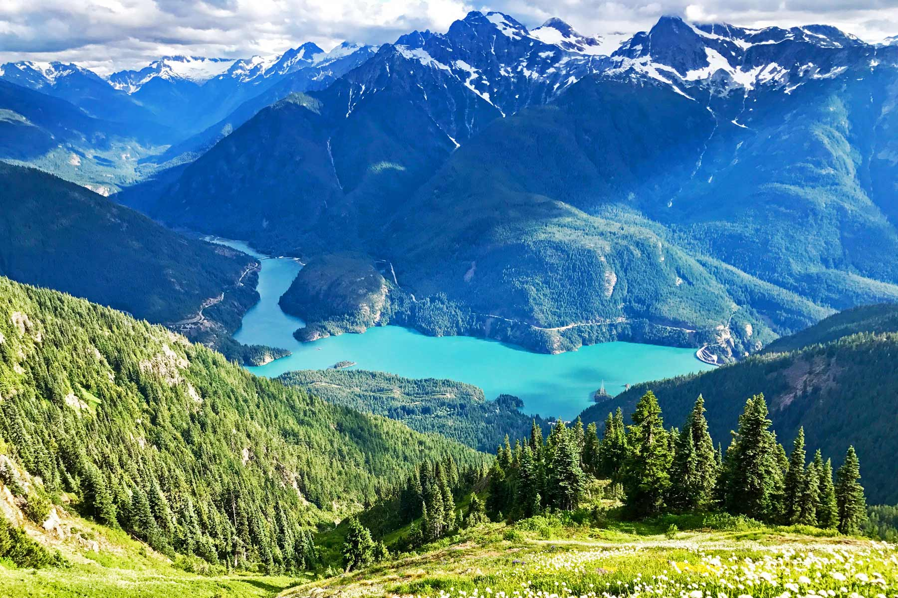

North Cascades National Park
The North Cascades, often referred to as the “American Alps,” are a stunning mountain range in northern Washington state. Renowned for their rugged peaks, turquoise alpine lakes, and vast wilderness, the North Cascades offer an unparalleled escape into nature's beauty.
Highlights of the North Cascades
- Scenic Drives: The North Cascades Highway (State Route 20) is one of the most beautiful drives in the U.S., with stunning views at every turn.
- Hiking Trails: Trails like Cascade Pass and Maple Pass Loop offer breathtaking vistas of alpine meadows, glaciers, and rugged peaks.
- Ross and Diablo Lakes: Famous for their vivid turquoise waters, these lakes are a must-visit for kayaking, hiking, or simply admiring the views.
Wildlife
The North Cascades are a haven for wildlife enthusiasts. The area is home to black bears, mountain goats, marmots, and even gray wolves. Bird watchers will enjoy spotting bald eagles, peregrine falcons, and various songbirds.
Best Times to Visit
Summer (July to September) is the best time to visit the North Cascades, as the weather is mild and trails are snow-free. Early fall offers spectacular foliage, while spring brings vibrant wildflowers. Winter visits are ideal for snowshoeing and solitude but require caution due to heavy snowfall.
Plan Your Visit
Start your journey at the North Cascades Visitor Center near Newhalem, where you can find maps, trail recommendations, and exhibits on the area's natural history. Be prepared for limited services in this remote region and pack plenty of supplies for your adventure.